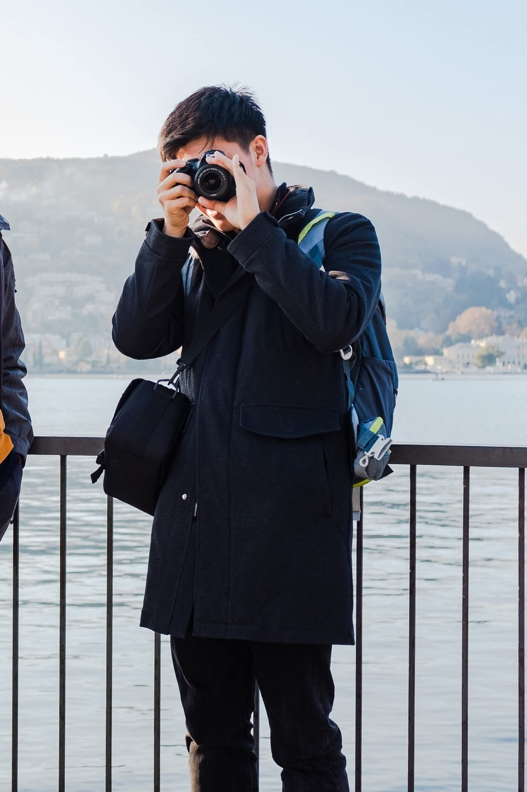

Wandering around the world.

Norway - 2021

Italy - 2021

Iceland - 2022

Sweden - 2025

Denmark - 2025

Croatia - 2026
Wandering closer to home – Memories from France.

Alsace - 2024

Normandy - 2026

Occitania - 2026
Wandering off the roll – A few odds and ends.

Head in the clouds

Candle flame
About

Hi! I'm a French self-taught photographer based in Paris. I started photography in 2021 and bought my first camera (which I'm still using today)
because I was going on a gap year in northern Norway. I mainly wanted to take pictures of northern lights (too bad I didn't succeed, but next time will be the one)
but I couldn't have been more amazed by the beautiful landscapes of Norway. I started taking pictures of everything, from natural landscapes to animals, and little by little,
the passion for photography grew inside me.
Photography has taught me a different way of looking at the world.
While it is easy to be amazed by the views that the world has to offer, photography also taught me that even the most common thing from daily life can be beautiful.
As a physicist who is often drowned in formulas, theories and experiments, the sensibility of a trained photographer's eye opens the
cage of rationality in which I sometimes put myself, and allows for more creative or nature-inspired ideas to flourish.